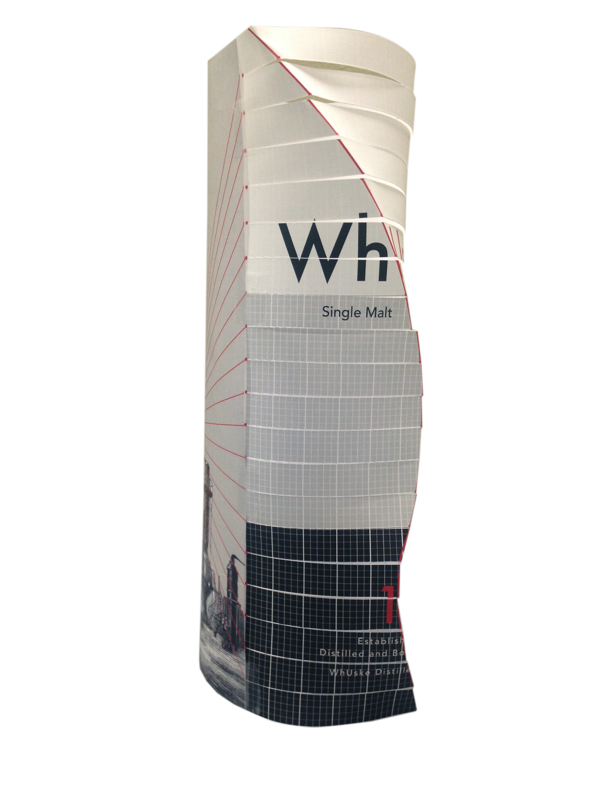
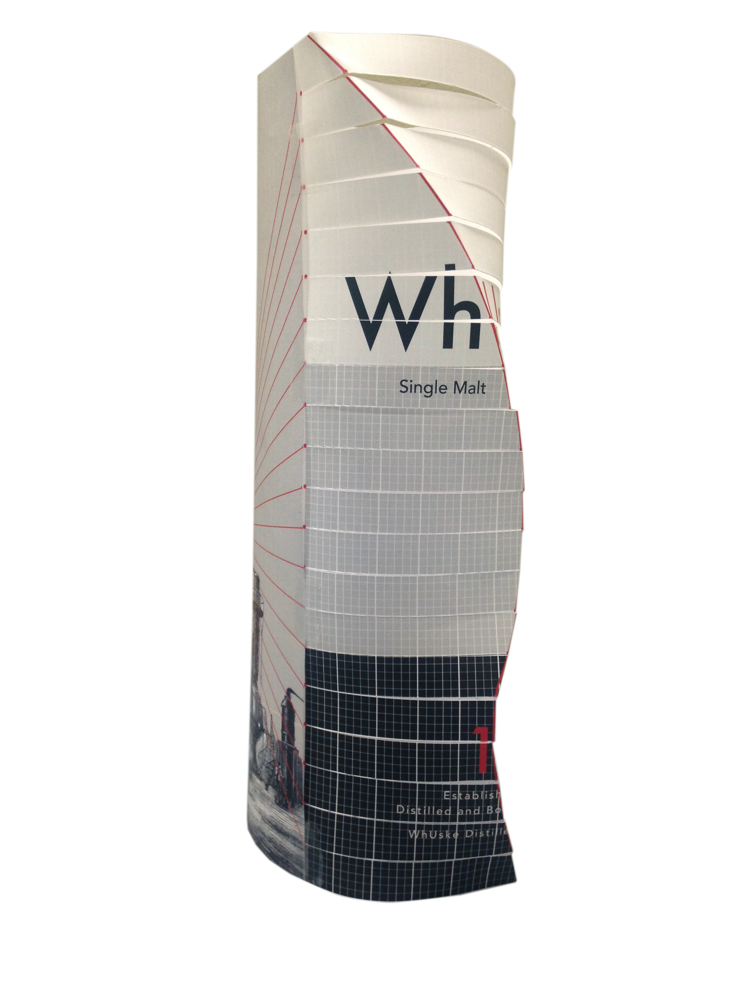

Whuske
Whuske is a single malt scotch designed to remove the ambiguity commonly associated selecting a new brand you are unfamiliar with. The package design is aimed towards displaying the dimensions of taste of the whiskey in place of the classic non-expressive packaging.
 
